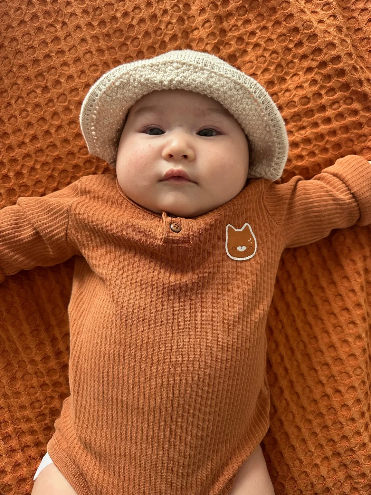

A life of faith.
A heart for
Cambodia.
We are a family of five serving with Youth With A Mission in Cambodia, raising our children and making Jesus known.
One family.
A shared calling.
We got married in January 2021, and just five months later we moved to Cambodia. What began as the two of us stepping out in faith has grown into a family of five.
Now, with three children—including our youngest, Hadassah—we are grateful to call Cambodia home as we serve, grow, and follow Jesus together.
Our Journey →

Our Journey in Cambodia
Married
We began our journey together and moved to Cambodia five months later.
Serving in Poipet
Our first three years of serving with YWAM on the Cambodia–Thailand border.
Pioneering in Siem Reap
We led a team to pioneer a new YWAM base and have served here for two years.
Five More Years
We have extended our commitment to serve in Cambodia for another five years.
Be part of the
next chapter.
As we step into five more years of serving in Cambodia, your prayers, encouragement, and financial partnership help make this ministry possible. We'd love for you to walk alongside our family.
Explore ways to giveOne-time gifts · Monthly partnership · US & Canadian giving
Small moments.
A bigger story.
From our first years in Poipet to pioneering a new YWAM campus in Siem Reap, here are some of the people, places, and everyday moments that shaped our journey.
2021–2024 · Poipet
Our first three years: learning, building relationships, and serving together.


2024–Present · Siem Reap
A new chapter: pioneering, discipleship, community, and family life.


Our Family · Present Day
Life in Cambodia with Joshua, Tabitha, and Hadassah.


Follow Along With Our Family
Read our updates, pray with us, and stay connected to what God is doing in Cambodia.